| Johnny Rolf
and
Jan De Rooden
Dutch ceramists.

Dutch ceramist Johnny Rolf makes figurative and abstract
sculpture, masks and sculptural vessels. Rolf met her future partner
potter Jan de Rooden in 1956, but trained herself. The couple established
a studio in Amsterdam in 1958. Rolf also draws and paints. Her awards
include the ‘Contour Prize Porceleyne Fles’ in 1964,
a Minister’s Prize in Faenza, Italy, in 1966, and several
Dutch Government grants.
Her residencies include Gustavsberg (Sweden) in 1966, University
of Davis, California, 1969, Sangre de Cristo Arts Center, Pueblo,
Colorado, USA in 1975 and Golden Bridge Pottery, Pondicherry, India
in 1985 and 1986.
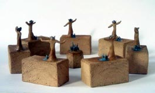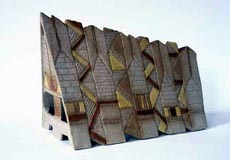
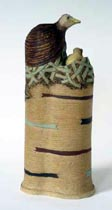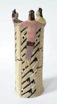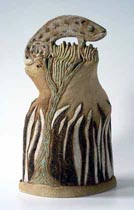
Jan de Rooden is a self-taught Dutch studio potter making
slab-built stoneware sculptural vessels with splashed glazes or
geometric designs. Since 1958 de Rooden and Rolf have their studio’s
under the same roof. His residencies include Gustavsberg (Sweden)
in 1966, Sangre de Cristo Arts Center, Pueblo, Colorado, USA in
1975. He taught at the Haystack Mountain School of Crafts, Maine
USA in 1975. At his request he helped Ray Meeker of the Golden Bridge
Pottery in Pondicherry, India, start the Fired Mudbrick House Project
in 1985 and 1986. His grants include a British Council Bursary in
1962, Dutch Ministry of Culture Travel Grants in 1962, 1968 and
1973, a Studio Grant in 1980, and a Prince Bernhard Foundation subsidy
for a monograph in 1991.Jan de Rooden cites the Dutch landscape
as one of his major sources of inspiration.
Johnny Rolf and Jan de Rooden are passionate travellers. Lecture
tours brought them to Universities and Art Academies in America,
England, Japan, Korea, Indonesia and India. “Giving lectures
and workshops are a wonderful sharing way of teaching” de
Rooden says. ”Without them, my potters life would have been
indeed only half as nice!”
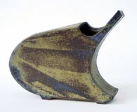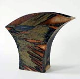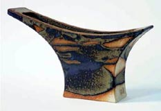
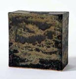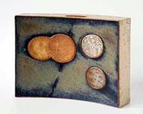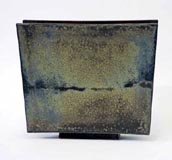
Statement
When the two of us met in the autumn of 1956 and discovered that
we both wanted to become potters, we could not have the remotest
idea, that once our studio would have a window to the world.
In a tiny no-daylight basement room we installed a kickwheel and
a small electric kiln, brought in some clay and glaze materials
and there we stood in our first workshop. It held just enough space
for one at a time to work with clay, but offered ample room for
the other person to encourage. From the start we welcomed what came
out of each other's hands. Onto what an inspiring ground we had
stumbled, we understood only later.
While our hands became surer, our studio grew, our craft became
art, and our pots became ceramics. Along with that each could develop
particular talents. After Johnny bought paper and the required materials,
first drawings and monotypes then etchings and gouaches began to
populate her studio in periods. Jan became good at composing and
preparing clay bodies, at adapting kilns, at developing special
firing methods and at making contact with people.
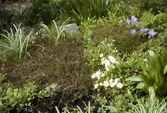Since
we decided to go the path of our lives together, we often made long
journeys and at times we worked abroad. In the countryside we built
a second studio with a salt kiln and enjoyed the vegetables grown
on our land. But Amsterdam always remained our base. For many years
our studios were on the canal of the Kloveniersburgwal in the center
of the old city. Alas, that in 1960 calm island became chaotic.
Now you find us in a quiet coach house on a broad green street bordering
Amsterdam's center. A small garden adds colour to many a working
day, and, so we hope, to our work as well.
View more work on their website http://www.johnnyrolfjanderooden.nl.
More Featured Artists
More Articles
|
{kind=link}
{kind=link}
{kind=link}
{kind=link}
{kind=link}
{kind=link}
{kind=link}
{kind=link}
{kind=link}
{kind=link}
{kind=link}